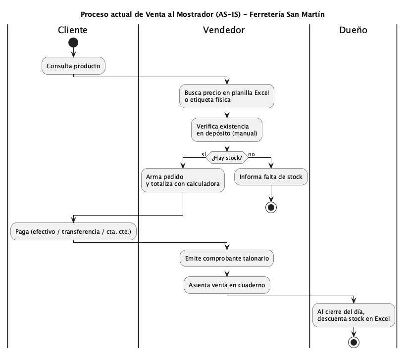
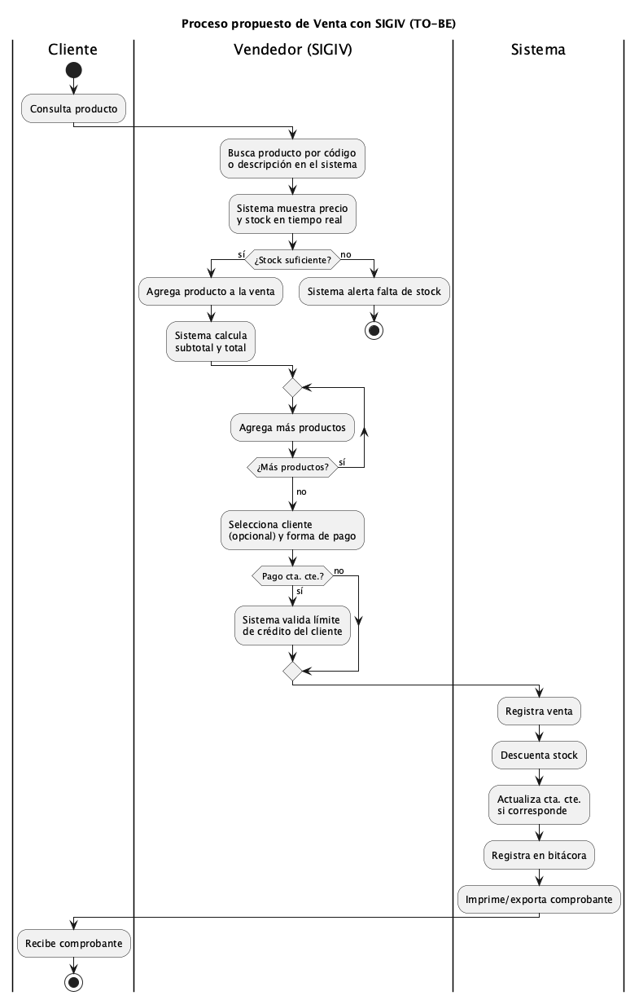
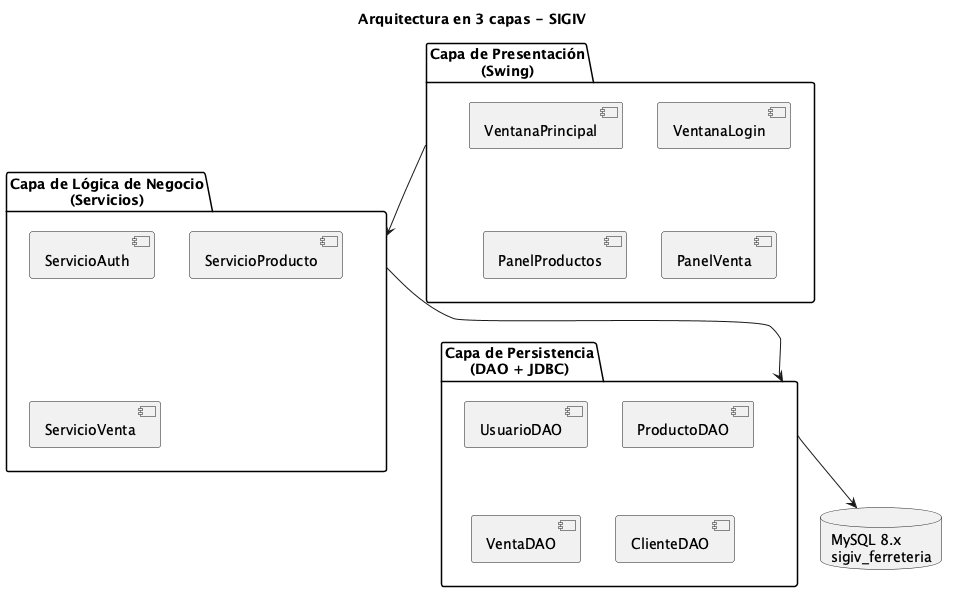
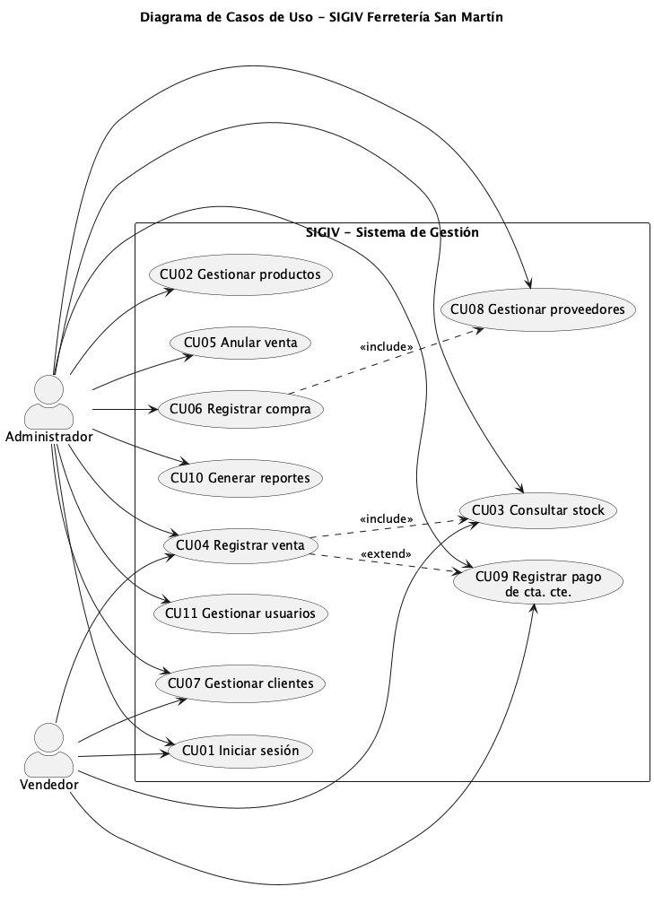

Materia: Seminario de Práctica Informática
Alumno: Ciro Urrustarazu
Email: cirourrustarazu16@gmail.com
Docente: [completar nombre del docente]
Año académico: 2026
Fecha de entrega: Abril de 2026
Repositorio GitHub: https://github.com/cirola/sigiv-ferreteria
SIGIV-SM — Sistema de Gestión de Inventario y Ventas para Ferretería San Martín
Ferretería San Martín es un comercio de barrio de la ciudad de Córdoba, con más de 15 años de trayectoria, dedicado a la comercialización minorista de herramientas, materiales eléctricos, sanitarios, pinturas y artículos de construcción. Atiende tanto a clientes finales como a pequeños gremios (albañiles, plomeros, gasistas y electricistas) que operan con cuenta corriente.
La organización cuenta con una dotación de tres personas —el dueño, quien también cumple funciones de administrador, y dos empleados que se desempeñan como vendedores de salón— y maneja un catálogo aproximado de 2.000 productos distribuidos en un local de atención al público y un depósito trasero.
Actualmente, toda la operatoria se gestiona de manera manual: las ventas se registran en un talonario de facturación y se asientan en un cuaderno; el control de stock se realiza a través de planillas de Excel que se actualizan de forma irregular; las cuentas corrientes de los clientes se llevan en un cuaderno aparte; y el vínculo con proveedores se coordina por teléfono y WhatsApp. Esta forma de trabajar ha generado pérdidas económicas por quiebres de stock, errores de facturación, demoras en la atención y una marcada imposibilidad de tomar decisiones informadas sobre el negocio.
El presente proyecto propone el análisis, diseño y desarrollo de un sistema informático que automatice e integre los procesos de gestión de inventario y ventas, brindando a la organización información oportuna, confiable y centralizada para optimizar su operatoria diaria. El desarrollo se encara aplicando el Proceso Unificado de Desarrollo (PUD) como marco metodológico, e implementa un prototipo operacional en Java + MySQL que demuestra la viabilidad técnica de la propuesta.
La gestión manual descripta ocasiona los siguientes problemas concretos, relevados durante el proceso de elicitación:
La implementación de un sistema informático específico para el rubro permitirá reducir significativamente los errores operativos, disminuir los tiempos de atención, garantizar la trazabilidad de las operaciones y proveer información estratégica para la toma de decisiones, contribuyendo directamente a la rentabilidad y sostenibilidad del negocio.
Viabilidad técnica: existen tecnologías abiertas y maduras (Java + MySQL) que permiten construir un sistema robusto a bajo costo; la infraestructura actual (una PC de escritorio en mostrador y otra en la oficina del dueño) es suficiente para operarlo en red local.
Viabilidad económica: el costo del desarrollo se recupera en menos de 6 meses solo considerando la reducción del 80% en ventas perdidas por quiebres de stock.
Viabilidad operativa: el dueño actúa como sponsor y los empleados manifestaron interés en la implementación, reduciendo el riesgo de resistencia al cambio.
Desarrollar e implementar un sistema informático de escritorio que permita a Ferretería San Martín gestionar de forma integrada los procesos de inventario, ventas, compras y cuentas corrientes, mejorando la eficiencia operativa y la calidad de la información disponible para la toma de decisiones.
Incluye:
No incluye (fuera de alcance):
El sistema, denominado SIGIV-SM (Sistema de Gestión de Inventario y Ventas - San Martín), es una aplicación de escritorio cliente-servidor con arquitectura en tres capas (presentación, lógica de negocio y persistencia), desarrollada en Java y con persistencia en MySQL. Se instalará en las PCs del local, conectadas a una base de datos centralizada en una de ellas actuando como servidor.
| ID | Requerimiento |
|---|---|
| RF01 | El sistema permitirá registrar, modificar, consultar y dar de baja productos, con sus atributos (código, descripción, rubro, precio de costo, precio de venta, stock actual, stock mínimo, proveedor habitual). |
| RF02 | El sistema permitirá registrar ventas con uno o varios productos, descontando automáticamente el stock. |
| RF03 | El sistema permitirá seleccionar cliente en la venta; si es cliente con cuenta corriente, podrá registrarse venta a crédito. |
| RF04 | El sistema permitirá registrar pagos parciales o totales de cuentas corrientes. |
| RF05 | El sistema permitirá registrar compras a proveedores, incrementando el stock. |
| RF06 | El sistema permitirá el alta, modificación y consulta de clientes y proveedores. |
| RF07 | El sistema generará alertas cuando un producto alcance o esté por debajo de su stock mínimo. |
| RF08 | El sistema permitirá emitir reportes: ventas por período, productos más vendidos, stock valorizado, clientes deudores, compras por proveedor. |
| RF09 | El sistema permitirá gestionar usuarios con roles (Administrador, Vendedor) y controlar el acceso a las funciones según el rol. |
| RF10 | El sistema registrará una bitácora (log) de operaciones críticas (ventas, ajustes de stock, modificación de precios). |
| ID | Requerimiento |
|---|---|
| RNF01 | Usabilidad: la interfaz debe ser intuitiva y permitir a un vendedor sin experiencia previa realizar una venta en menos de 5 minutos de capacitación. |
| RNF02 | Rendimiento: el registro de una venta no debe demorar más de 2 segundos desde la confirmación. |
| RNF03 | Seguridad: las contraseñas se almacenarán cifradas (hash BCrypt con salt). El acceso al sistema requerirá autenticación. |
| RNF04 | Disponibilidad: el sistema debe operar durante el horario comercial (8 a 20 hs) sin caídas. |
| RNF05 | Confiabilidad: se realizará un backup automático diario de la base de datos. |
| RNF06 | Mantenibilidad: el código se desarrollará aplicando patrones (DAO, MVC) y estándares de codificación Java, facilitando su evolución. |
| RNF07 | Portabilidad: al estar desarrollado en Java, el sistema podrá ejecutarse en Windows o Linux sin modificaciones. |
| RNF08 | Escalabilidad: la arquitectura debe permitir incorporar nuevos módulos (facturación electrónica, e-commerce) sin rediseño. |
Ferretería San Martín opera bajo la figura jurídica de Monotributo, con el dueño como responsable legal. Su modelo de negocio combina venta al mostrador (80% de la facturación) con cuenta corriente para clientes habituales del rubro construcción (20%). Los márgenes brutos promedian el 35%, con variaciones entre rubros (herramientas: 25%, pinturas: 40%, bulonería suelta: 50%).
Proceso 1: Venta al mostrador
Proceso 2: Reposición de mercadería
Proceso 3: Cobro de cuenta corriente

Figura 1 — Proceso actual de venta al mostrador (AS-IS).
Se propone el desarrollo de SIGIV-SM, una aplicación de escritorio multiusuario con arquitectura cliente-servidor en red local. El sistema estará compuesto por:

Figura 2 — Proceso propuesto de venta con SIGIV (TO-BE).
Arquitectura en 3 capas:
ServicioAuth, ServicioProducto,
ServicioVenta) que implementan las reglas del negocio y
orquestan las operaciones.Las operaciones que afectan múltiples tablas (ej. registrar venta → descontar stock + actualizar cta. cte. + escribir bitácora) se ejecutan dentro de una transacción atómica para garantizar consistencia.

Figura 3 — Arquitectura en 3 capas del sistema SIGIV.
| Componente | Tecnología | Justificación |
|---|---|---|
| Lenguaje | Java 17+ (LTS) | Lenguaje requerido por la consigna; maduro, portable, rico en bibliotecas. |
| UI | Swing | Nativo de Java, no requiere dependencias extra, suficiente para aplicación de gestión. |
| Base de datos | MySQL 8.x | Motor requerido por la consigna; robusto, open source, ampliamente documentado. |
| Driver JDBC | MySQL Connector/J 8.3 | Driver oficial mantenido por Oracle. |
| Gestor de dependencias | Maven 3.9 | Estándar en proyectos Java empresariales. |
| Hash de passwords | jBCrypt 0.4 | Implementación madura del algoritmo BCrypt para cumplir RNF03. |
El prototipo operacional entregado implementa los módulos Seguridad, Productos e Inventario, y Ventas (incluyendo cuentas corrientes básicas), cumpliendo con la definición de prototipo de Kendall & Kendall (2011) como “modelo operacional que incluye solo algunas características del sistema final”, que se irán integrando en las iteraciones siguientes.
El desarrollo se organiza en las cuatro fases del PUD:
Los flujos de trabajo del PUD (requisitos, análisis, diseño, implementación, pruebas) se ejecutan transversalmente en cada fase, con distinta intensidad según la etapa. En esta fase de Inicio predominan los flujos de requisitos y análisis, ya iniciados.
| ID | Caso de uso | Actor principal |
|---|---|---|
| CU01 | Iniciar sesión | Administrador, Vendedor |
| CU02 | Gestionar productos (ABM) | Administrador |
| CU03 | Consultar stock | Administrador, Vendedor |
| CU04 | Registrar venta | Vendedor, Administrador |
| CU05 | Anular venta | Administrador |
| CU06 | Registrar compra | Administrador |
| CU07 | Gestionar clientes | Administrador, Vendedor |
| CU08 | Gestionar proveedores | Administrador |
| CU09 | Registrar pago de cuenta corriente | Vendedor, Administrador |
| CU10 | Generar reportes | Administrador |
| CU11 | Gestionar usuarios | Administrador |

Figura 4 — Diagrama de casos de uso del sistema SIGIV.
Las relaciones principales son:
Registrar venta include
Consultar stock (toda venta valida disponibilidad).Registrar venta extend
Registrar pago de cuenta corriente (cuando la venta es a
crédito y el cliente cancela en el acto).Registrar compra include
Gestionar proveedores (si el proveedor no existe se crea en
el momento).| Campo | Detalle |
|---|---|
| Actor principal | Vendedor |
| Precondición | El vendedor está autenticado en el sistema. |
| Postcondición | La venta queda registrada, el stock actualizado y (si aplica) la cuenta corriente del cliente. |
| Flujo principal | 1. El vendedor inicia una nueva venta. 2. Agrega productos buscándolos por código o descripción. 3. El sistema valida stock disponible y calcula subtotal. 4. El vendedor selecciona cliente (opcional) y forma de pago. 5. Confirma la venta. 6. El sistema registra la operación, actualiza stock, imprime comprobante. |
| Flujo alternativo A1 | En paso 3, si no hay stock suficiente, el sistema alerta y no permite agregar el producto. |
| Flujo alternativo A2 | En paso 4, si la forma de pago es cuenta corriente, el sistema valida que el cliente tenga cuenta habilitada y saldo disponible. |
| Excepciones | Caída de conexión a BD → el sistema informa y cancela la operación sin registrar cambios (rollback). |
| Campo | Detalle |
|---|---|
| Actor principal | Administrador |
| Precondición | Administrador autenticado. |
| Postcondición | El producto queda registrado, modificado o dado de baja. |
| Flujo principal | 1. Accede al módulo Productos. 2. Selecciona acción (alta, modificación, baja, consulta). 3. Ingresa o modifica los datos. 4. El sistema valida (código único, precios no negativos, rubro existente). 5. Confirma y el sistema persiste el cambio. |
| Excepciones | Código duplicado → el sistema avisa y no permite guardar. |
| Campo | Detalle |
|---|---|
| Actor principal | Administrador |
| Precondición | Administrador autenticado. |
| Flujo principal | 1. Selecciona tipo de reporte. 2. Define parámetros (rango de fechas, rubro, cliente). 3. El sistema consulta la BD y genera el reporte en pantalla con opción de exportar a PDF. |
Se desarrolló un prototipo operacional en Java + MySQL que implementa los módulos Seguridad, Productos y Ventas. El prototipo incluye:
Repositorio GitHub: https://github.com/cirola/sigiv-ferreteria
Credenciales de prueba:
| Usuario | Contraseña | Rol |
|---|---|---|
| admin | admin123 | ADMIN |
| vendedor1 | admin123 | VENDEDOR |
Instrucciones de ejecución: ver
README.md del repositorio.